02 Séquence A · Activité 02 · Dossier
Relevés d’habitation — Dossier
Mettre en forme vos relevés dans un fichier Word et calculer vos surfaces et volumes dans Excel.
Mettre en forme vos relevés dans un fichier Word et calculer vos surfaces et volumes dans Excel.
Suite aux relevés que vous avez faits dans votre maison, il vous est demandé de mettre le tout en forme sur un fichier Word. De plus vous allez devoir acquérir quelques bases du logiciel Excel qui va vous permettre de facilement calculer les surfaces et volumes de votre logement.
Ouvrez un fichier Word vierge et sauvegardez-le « Logement Nom prénom »
Insérez une page de garde (Insertion > page de garde comme ci-contre) et choisissez le style qui vous convient. Écrivez un titre, votre nom, prénom, classe et groupe.
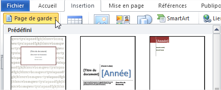
Page de garde">Sur la page d’après créez un sommaire avec les divers chapitres (Étude thermique, électrique et eau chaude sanitaire) que vous paginerez à la fin (vous pouvez le faire sous forme de tableau)
Créez un en-tête et un pied de page (Insertion > En-tête ou Pied de page). Sur l’en-tête écrivez le titre que vous avez choisi. Sur le pied de page mettez le numéro de page ainsi que votre nom.
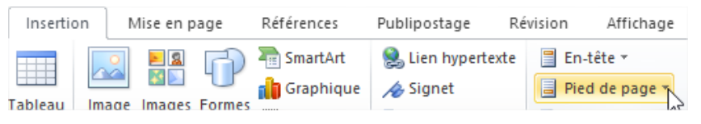
insertion d’en-tête ou pied de page">Faites un saut de page pour que le chapitre suivant commence toujours sur une nouvelle page
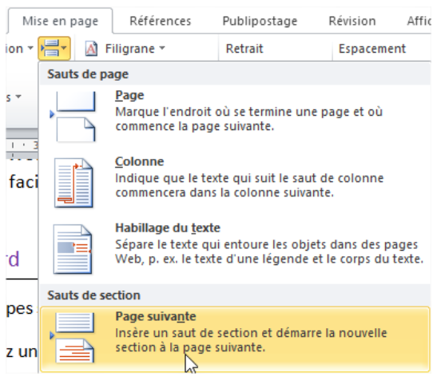
Sauts de page">Sur la page suivante, mettez un titre « Étude thermique » et placez-y toutes vos informations en écrivant des phrases courtes mais complètes. Si vous avez des photos insérez-les avec une légende.
Commencez les « Études électriques » et « Étude de l’eau chaude sanitaire », elles aussi sur de nouvelles pages.
Ouvrez un nouveau fichier Excel
Sur les cases de la ligne 1 et de la ligne 2, écrivez les informations comme ci-contre.
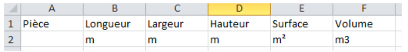
Fusionner deux cellules : sélectionnez ensuite la case « Pièce » et celle du dessous. Dans le menu « Accueil » cliquez sur « Fusionner » pour ne faire plus qu’une seule case avec « Pièce » écrit dedans.
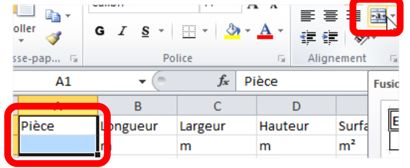
Mettre en forme les cases : cliquez sur le rectangle juste au-dessus du « 1 » et à gauche du « A » pour sélectionner toutes les cases. Cliquez ensuite sur « Aligner au centre » et « centrer ».
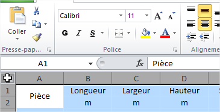
Écrivez ensuite le nom de votre première pièce ainsi que sa longueur, largeur et hauteur.
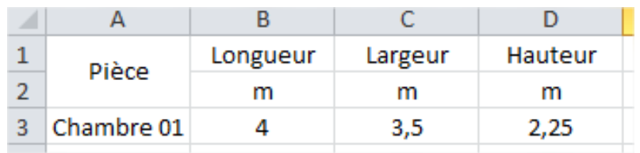
Formule : vous allez maintenant créer votre formule. Cliquez dans la case sous « m² ». Tapez « = » pour créer votre formule. La surface d’un rectangle étant égale à la longueur fois la largeur, cliquez sur la case de la longueur, la touche « * » puis celle de la largeur et enfin la touche « Entrer ». Vous devriez avoir le résultat qui va s’afficher.
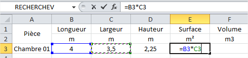
Faites la même chose avec le volume, mais ce n’est pas la même formule…
Écrivez les autres salles avec leurs dimensions mais ne refaites pas les formules. Quand toutes vos salles sont écrites, sélectionnez les 2 cases dans lesquelles il y a des formules. Prenez le tout petit carré en bas à droite de votre sélection et tirez-le vers le bas sur toutes vos pièces. Automatiquement les formules se mettront à jour.
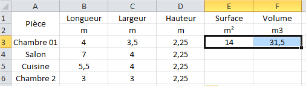
Somme des surfaces et volumes : pour faire la somme de toutes les surfaces, sautez une ligne après la dernière salle (pour faire joli) puis cliquez dans la case. Tapez « = » pour lancer la formule. Pour faire la somme écrivez en majuscule « SOMME » et ouvrez une parenthèse. Avec la souris sélectionnez ensuite toutes les cases de surfaces et fermez la parenthèse. Appuyez la touche « Entrer » pour valider et voir la somme des surfaces apparaître.
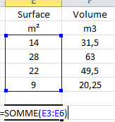
Écrivez le mot « Somme » sur la case à gauche de la somme des surfaces et faites l’équation permettant de calculer le volume (plusieurs façons de faire)
Mise en forme du tableau : mettez en forme votre tableau en rajoutant des bordures (sélectionnez le tableau, clic-droit « Format de cellule » puis onglet « Bordure »). Changez les dimensions des colonnes et lignes, mettez des couleurs, changez de police, de taille de police, bref faites un tableau que vous trouvez joli. Cela pourrait donner quelque chose comme ci-dessous :
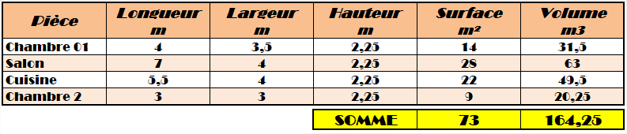
Créez une nouvelle partie dans votre Word « Surfaces et volumes » et placez-y le tableau Excel (plusieurs façons de faire).
Expliquez en quelques courtes phrases si vous pensez vivre dans un logement grand ou pas… Pensez au nombre d’habitants.
Quand tout est terminé, sauvegardez votre fichier Word en .pdf
Ce site a été réalisé par Abdellah CHELOUAH.